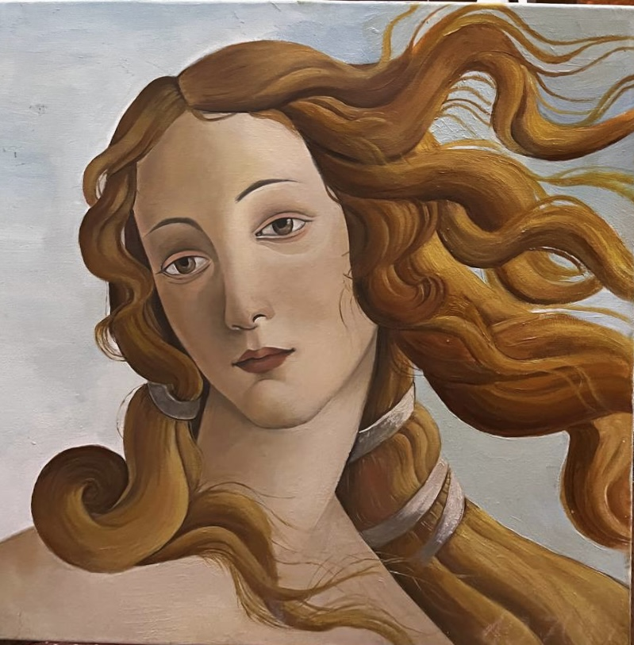
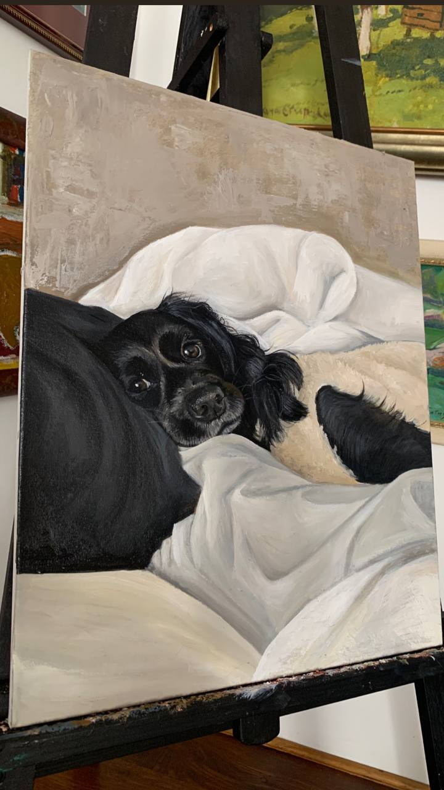
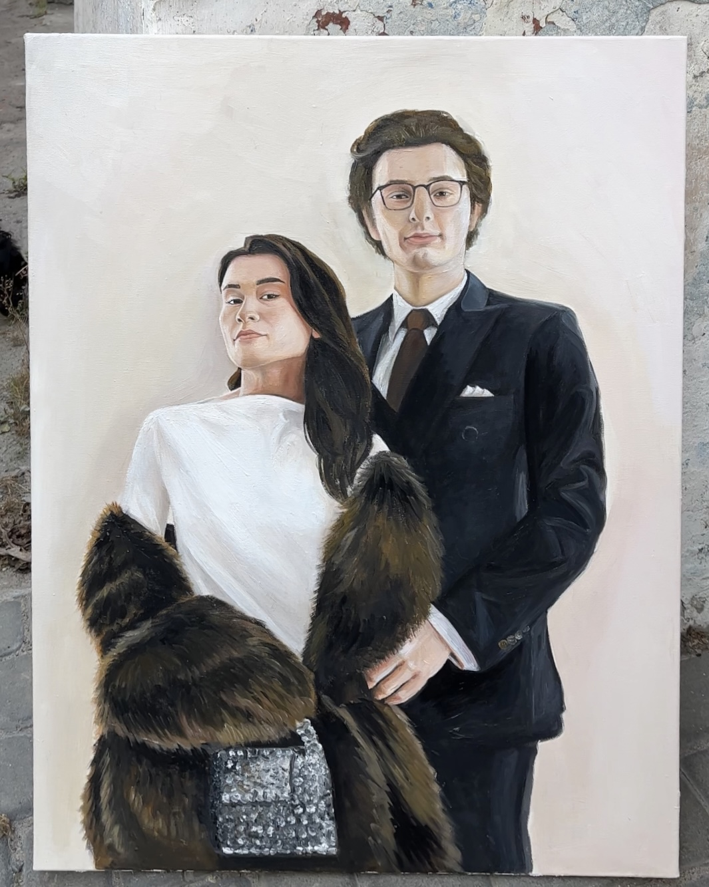
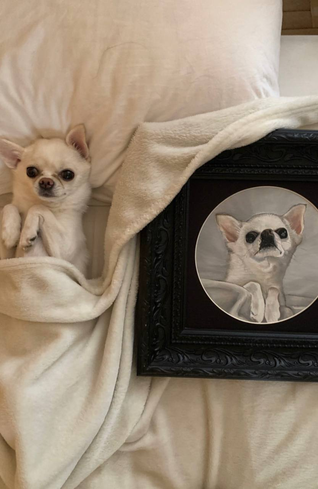
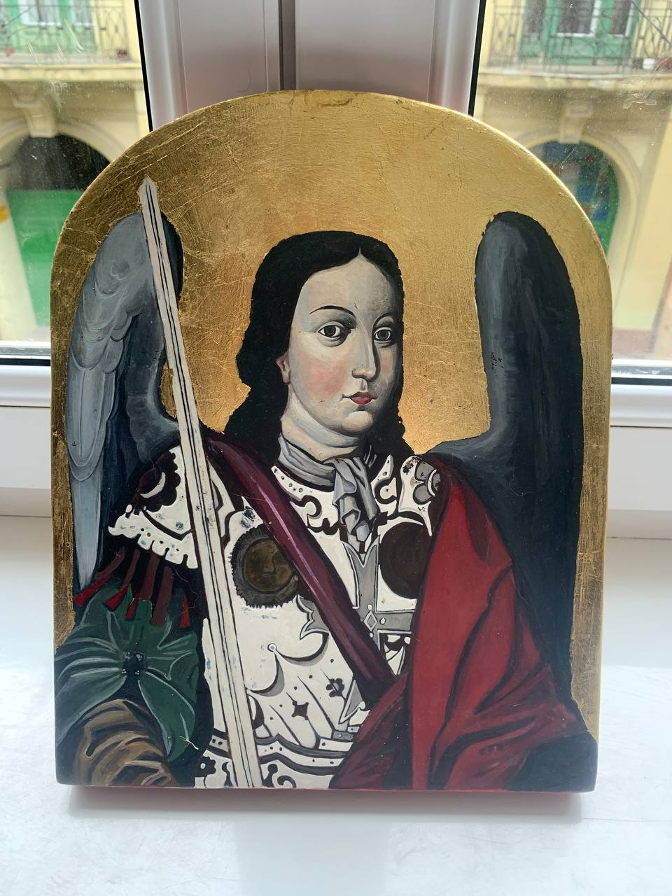
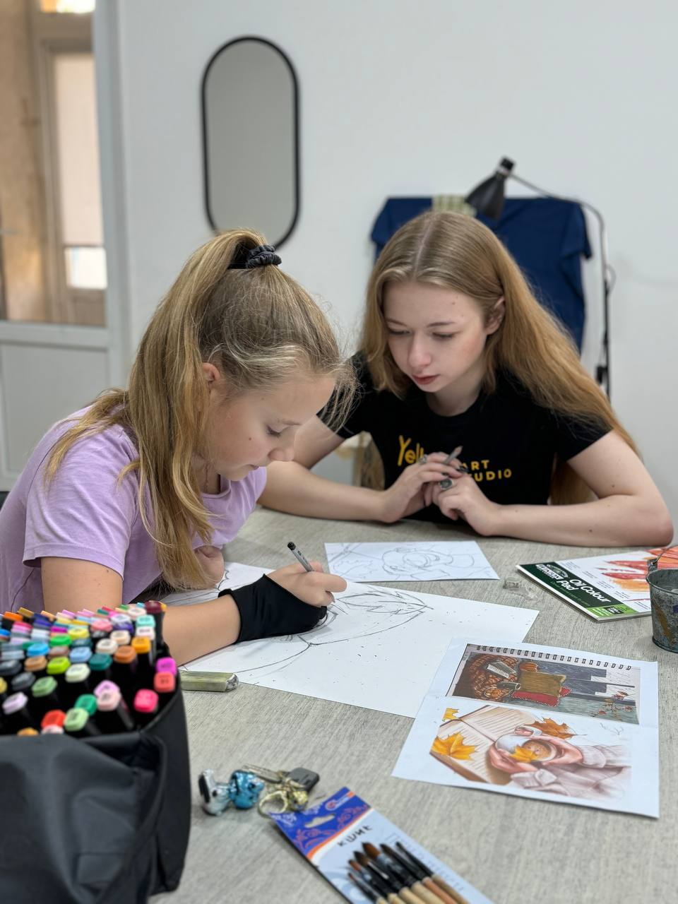
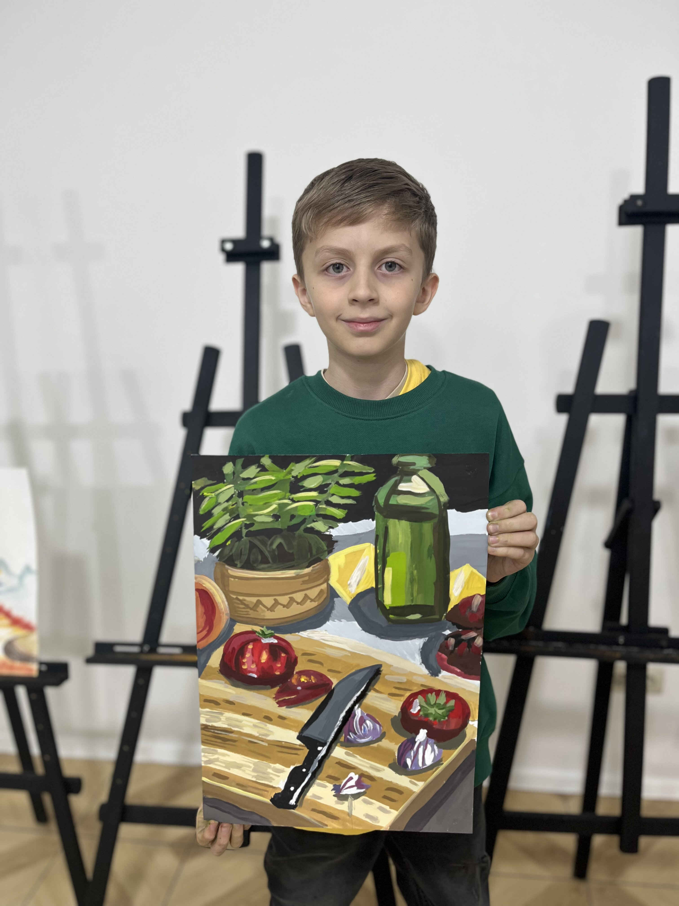
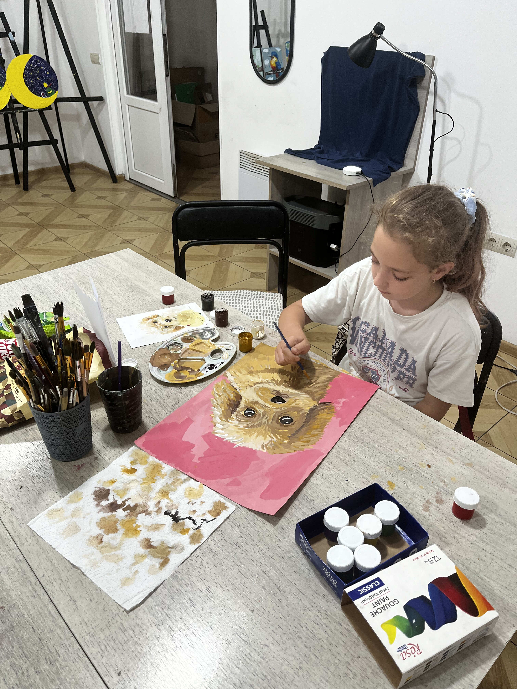
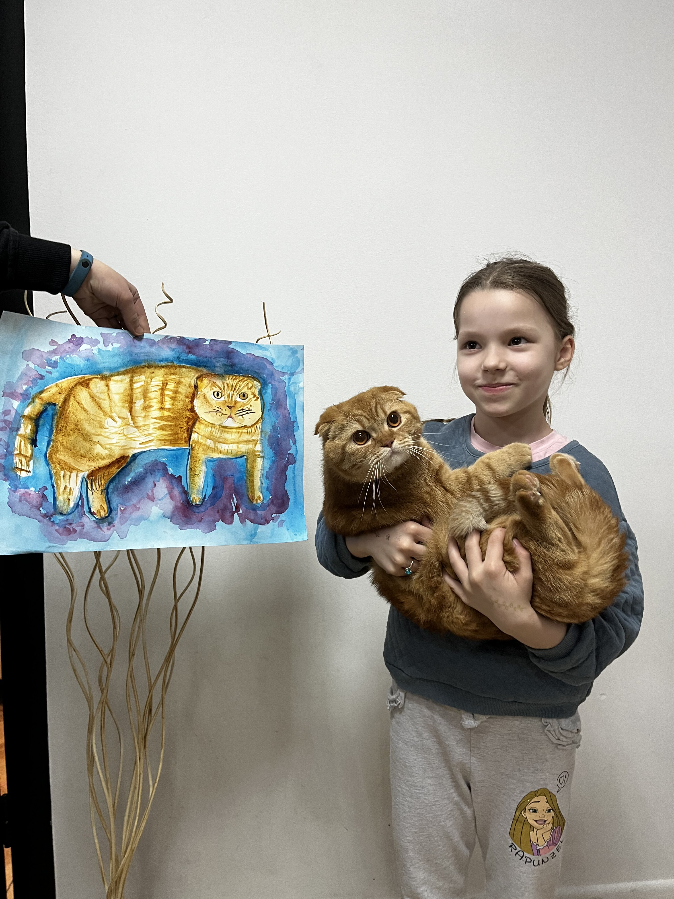

Про мене
Закінчила у 2024 році Львівський коледж декоративного і ужиткового мистецтва ім. І. Труша. Здобула ступінь фахового молодшого бакалавра за спеціальністю «Образотворче мистецтво, декоративне мистецтво, реставрація». Працюю художницею та викладачем у студії Yellow Art Studio.
Викладаю дітям і дорослим різні техніки малювання: олійний живопис, акварель, графіка. Організовую майстер-класи, творчі табори та креативні заходи.
Мої роботи





Викладаю
Мої учні освоюють різні техніки малювання: олійний живопис, акварель, графіка. Я проводжу як індивідуальні заняття, так і групові майстер-класи для дітей і дорослих. Ділюся своїм досвідом, допомагаючи втілювати творчі ідеї.




Контакти
Напишіть мені:
- Email: salamemda@icloud.com
- Instagram: @soliasypnyak